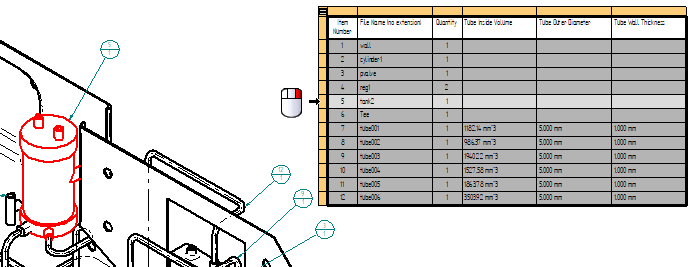
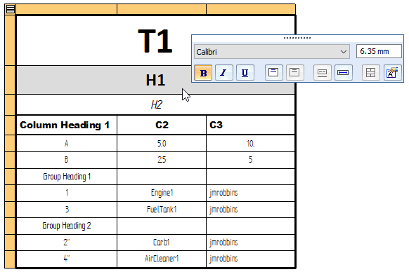
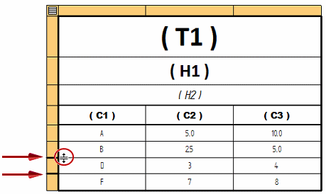
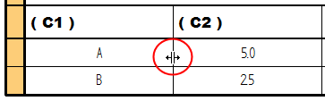

Editing a table directly
When you double-click a table or parts list, an orange edit frame appears at the top-left corner of the table.

Once the edit frame is displayed:
-
One click edits the format of the cell.
-
Two clicks edit the text or value displayed in a cell.
Note:Not all cells can be edited. The background color of a cell indicates whether it can be edited or not. For more information, see Table cell color and value editing.
-
Arrow keys enable you to replace the content in one cell after another, without having to first select a cell.
-
Right-clicking this button
 displays a shortcut menu. You can use this shortcut menu to:
displays a shortcut menu. You can use this shortcut menu to:-
Open the Table Properties dialog box for all types of tables.
-
In model-derived tables, Show and edit property text in a table cell to apply formatting to resolved property text strings.
-
Display thumbnail images of parts in a parts list.
-
Highlight parts in a drawing view that match items in a parts list.
-
Identifying and accessing parts in a parts list
You can use two shortcut commands—Thumbnails and Highlight— to identify individual items in a parts list. These commands stay selected until you dismiss the orange edit frame.
-
When the Thumbnails command is selected, as you move your cursor down the rows in the parts list, an image of each item is displayed in the thumbnail window.

-
When the Highlight command is selected and you click a cell or row in the parts list, the corresponding part is highlighted in the drawing view.

-
To open a model directly from the parts list, select the Open command by right-clicking a single data cell or the orange edit cell corresponding to the item number.

Direct table cell value editing
When a table cell is eligible for editing, you can quickly replace the text in the cell just by typing in the cell. You can then press an arrow key to move to another cell, and begin typing there.
For example, you can:
-
Select a data cell and edit its value.
-
Change the text displayed in a column heading.
-
Rename the table title.
In a hole table, you can use the Format Values dialog box to change the formatting for hole size round-off, units, and tolerance on one or more selected individual cells. To open the dialog box, choose the Format Values command on the shortcut menu in direct edit mode.

Direct table format editing
When you select a cell for direct editing, a Table Format command bar displays tools for:
-
Selecting a different font style.
-
Changing the font size (text size) of data cells and title cells (but not column heading cells). To learn how to do this, see Change the font size of table cells with direct edit.
Note:You cannot directly change the text size of column headings, as this is controlled by the Column heading style within the Table style. To learn how to change the size of the text in column headings, see Specify the appearance of table text.
-
Adding font formatting, such as boldface, italics, and underline.
-
Changing text orientation from horizontal to vertical (only in column heading cells).
-
Adjusting text horizontal and vertical alignment and justification based on cell type.
-
Merging and splitting cells in column heading rows.
-
Using the Insert Property Text button to Add and edit property text in a user-defined table cell.
The specific formatting options that are available depend on what type of cell you select.
You can apply independent formatting changes to the following types of cells:

- Title cells (T1), (H1), (H2)
-
Title cells are defined initially on the Title tab in the Table Properties dialog box. If the same title is shown at the top and the bottom of the table, the formatting is applied to both locations.
You can insert additional title rows and format them as subtitles.
For more information, see Add a table title.
- Column headings (Column Heading 1, C2, C3)
-
Column headings are defined initially in the Table style on the Text tab in the Table Style dialog box.
Using direct edit mode, you can format the column headers separately from the column data cells, without having to edit the column header style within the table style.
- Group headings (Group Heading 1, G2)
-
Group headings are initially defined in the Group header section on the Groups tab.
Using direct edit mode, you can format the group headers separately from the column data cells. For more information, see Grouping data in tables and learn how to Group data in a table.
- Data cells
-
Data cell formatting is defined initially on the Data tab in the Table Properties dialog box, in the Format Column dialog box, and in the Format Table Cells dialog box.
The font size is specified in the Table style.
You can use the Undo command to undo a change to the table format or the cell value.
For formatting options and examples, see Manipulate table rows and columns.
Direct table structure editing
You can insert, delete, hide, and show rows and columns using the shortcut menus available on the edit frame.
- Inserting rows
-
When you position the cursor in the cell at the start of a row, you can use shortcut commands to insert one or more title rows, column heading rows, or data rows. You also can delete one or more rows.

- Inserting columns
-
When you position the cursor on the orange cell at the top of a column, you can insert one or more columns, and you can delete columns.

- Hiding and showing rows and columns
-
A thick line is displayed wherever a row or column is hidden. You can double-click the unhide icon (circled in the image below) to show a hidden row. You also can select the Show Rows command from the shortcut menu.

- Changing column size
-
When a table is selected for direct editing, you can change the width of a column using the sizing handle. The sizing handle is displayed when the cursor is positioned over a vertical line between two columns. You can drag the vertical line to the right or to the left to adjust the column width. This also changes the overall table width, based on the location of the table anchor point.
Example:The anchor point of this table is Top-Left. When this vertical line is dragged to the left, column (C1) narrows. Column (C2) is unaffected, but the overall table width is reduced by the same amount.

How do I
Align a table to a border or title blockEdit a table cell directly
Show and edit property text in a table cell
Change the font size of table cells with direct edit
Separate and rejoin table pages
Extract model information into a model table using property text
Sort table contents
Copy table contents to the clipboard
Add a table title
Manipulate table rows and columns
Learn more
Table cell color and value editingArranging table pages